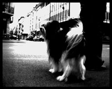

|
WONDERLAND
Nicolas Humbert, Martin Otter | D/F 2009 |
2 x 60 Min.
Film: MANIC CINEMA (Nicolas Humbert & Martin Otter)
Material: DV
Format: DVD
Originalsprache: o. Dialoge
Kamera: Nicolas Humbert, Martin Otter
Schnitt: Nicolas Humbert, Martin Otter
Musik: DAS KAPITAL (guitars, voice, electronics – Edward Perraud: drums, percussion – Daniel Erdmann: saxophones, harmonica, effects)
Produktion: MANIC CINEMA / DAS KAPITAL
Vertrieb: MANIC CINEMA / DAS KAPITAL
WONDERLAND entstand 2006/2007 als gemeinsames Projekt der Pariser Band DAS KAPITAL und der Filmemacher Nicolas Humbert und Martin Otter. Für jeweils eine Woche tauchten sie auf der Suche nach Bildern und Klängen in die Atmosphäre einer Stadt ein. Aus den aufgenommenen Bildern und O-Tönen entstand eine filmisch-akustische Komposition, die DAS KAPITAL in einem Ciné-Concert improvisierend begleitete.
Der auf zwei Leinwänden projizierte Bilderflow ist ein visueller und musikalischer Trip in die urban jungles von Zürich und Straßburg. Die Ränder des urbanen Raums erscheinen als unheimliche Schattenseiten, Intimität entsteht in nächtlichen Begegnungen mit Gestalten des modernen Lebens. Mikroerzählungen schälen sich in dunklen Straßenecken aus Blicken und Gesten, ein danse macabre über die Bewohnbarkeit der Städte hebt an. HOPES & FEARS, SOAPS & TEARS: WONDERLAND entführt in einen suggestiven Raum der Imagination.
Die Kunst entsteht da, wo du wohnst. Man macht die Kunst da, wo man ist. – Robert Filliou
Nicolas Humbert, geb. 1958. Erste Texte, Bilder und Super-8-Filme unter dem Einfluss des Französischen Surrealismus. Gründung der 'Groupe Macsom'. Bis 1987 Studium an der Filmhochschule München. 1987 Gründung der Produktion 'Cine Nomad', zusammen mit Werner Penzel. Seitdem arbeitet Humbert als als unabhängiger Regisseur, Produzent und Autor. Er lebt und arbeitet in München.
Filme (Auswahl): Nebel jagen 1985 | Wolfsgrub 1986 | Step Across the Border 1990 | Middle of the Moment 1995 | Vagabonding Images 1998 | Three Windows 1999 | Brother Yussef 2005 | Lucie et maintenant 2007 | Lenin on Tour 2009 | Wonderland 2009
Martin Otter, geb. 1971 in Haag. Lebt als Autor und Regisseur in München. Zusammenarbeit als Videokünstler und Filmemacher in zahlreichen Kunst-, Theater- und Musikprojekten, u.a. mit Choreografin Rosemary Butcher und Filmemacher Nicolas Humbert. Seit 2008 Vorbereitung der Regiearbeit zum Dokumentarfilm "Day for night" über den blinden vietnamesichen Schriftsteller Trung Thanh Nguyen.
Filme: Wonderland 2009
zurück
|